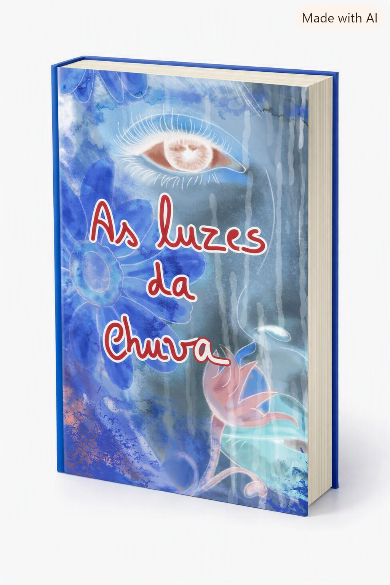
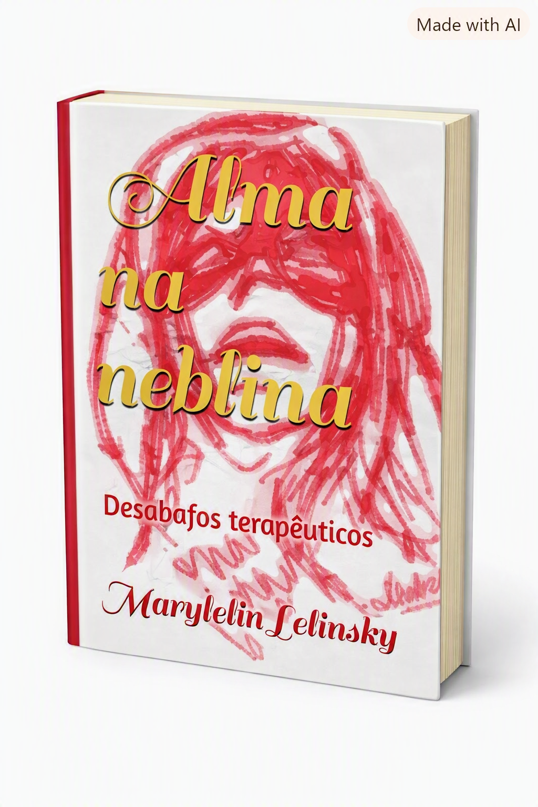
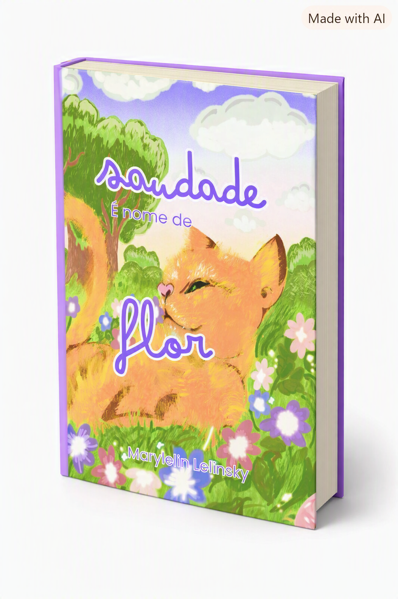
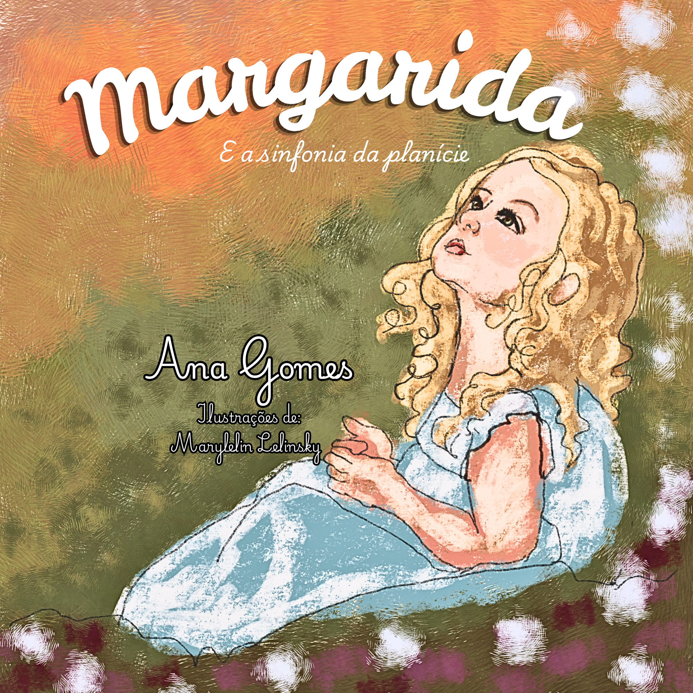
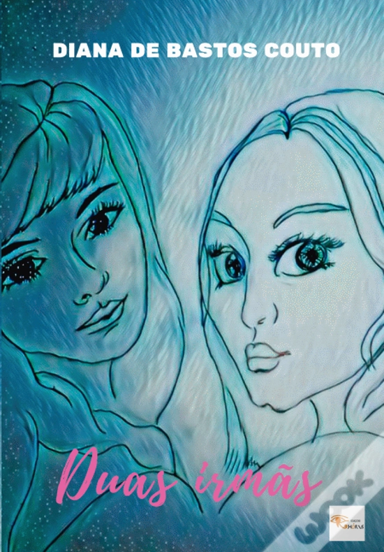

Ilustradora & Escritora
Poesia e literatura infantil, feitas à mão.
Porto · Portugal · 2026 · Portfolio № 001
Um objeto literário
Autora e ilustradora portuguesa, de raiz atlântica e do Norte, radicada no Porto. Sete livros entre poesia, prosa e imagem — cada um, uma pequena paisagem.
Ilustradora & escritora — narrativa visual, poesia e literatura infantil, feitas à mão.
§ Obras · Livros publicados
Sete livros publicados. Cinco de autoria própria, dois em parceria como ilustradora.
Toque para comprar.

№ 01 · Autoria
Poesia visual reunida a partir do blog pessoal. Um livro para se ler descalço.
🛒 Amazon
№ 02 · Autoria
«Desabafos terapêuticos» — a obra de estreia, poesia e imagem que se dissolvem na bruma.
🛒 Amazon
№ 03 · Autoria
Um herbário de afetos, nascido de um pequeno luto de verão.
🛒 Amazon
№ 04 · Ilustração
Uma menina, uma planície inteira e a música que só ela ouve.
📘 Chiado Books№ 05 · Autoria
«Onde o tempo ainda nos mastiga» — narrativa onírica sobre o subconsciente e a melancolia.
🛒 Amazon
№ 06 · Ilustração
Primeira colaboração profissional: capa e ilustração de um romance.
📗 WOOK№ 07 · Autoria
Literatura infantil onde o impossível encontra casa no céu.
🛒 Amazon